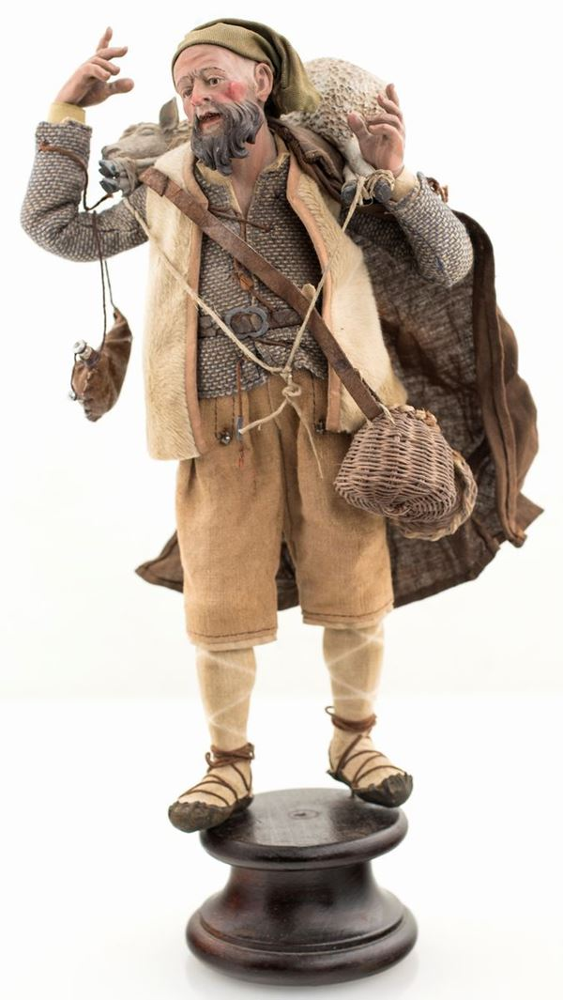

Figura di pastore da presepe
Bottega napoletane, seconda metà del XVIII secolo
Pastore con mantello e bisaccia; vesti originali con rammendi antichi.
- Identificativo
- OGG-0015
- Tipologia
- Scultura
- Autore o ambito
- Seconda metà del XVIII secolo